Turn expertise into performance.
FISCH helps organizations turn expertise into observable behavior change by building practical systems around the moments where performance breaks.
From expertise to performance
Behavior change needs more than information.
FISCH helps teams move from expertise to action by identifying the moment that matters, building the right support around it, reinforcing it in the work, and proving whether it changed what people do next.
The Problem
Performance breaks at predictable moments.
Most organizations have the expertise. What they're missing is the architecture that turns it into consistent, observable behavior. The gap is more than knowledge, it's what people do in the moment that matters.
- Hesitation People know the concept. They stall at the edge of the unfamiliar situation.
- Bad defaults No one modeled the right move. So people fall back on whatever they already know.
- Weak judgment The criteria for a good decision were implicit. They were never made explicit or practiced.
- Poor handoffs Context doesn't transfer with the work. What was known in one role disappears in the next.
- Missing manager support Reinforcement was assumed, not designed. Managers were never given a clear role in the change.
- Adoption friction The workflow wasn't part of the rollout. The new behavior competes with the existing one.
Courses don't fix these. Designed systems fix these.
The Method
We don't start with courses. We start with the moment.
Every engagement follows the same four-beat logic, regardless of topic, audience, or scale. The goal is always the same: observable behavior change, built around the moments that matter.
-
01 Aim
Identify the pivotal behavior and define success.
We find the exact moment where performance breaks and name what good looks like.
-
02 Move
Ship the smallest useful support fast.
One clear move, designed for the real situation. Built to be used immediately — not studied, not stored, not forgotten.
-
03 Embed
Make the behavior easier inside actual work.
We reduce friction at the point of performance: reference tools, manager prompts, and workflow integration built into the context where the behavior needs to happen.
-
04 Scale
Prove lift, package what works, and expand only after evidence.
We establish proof loops, measure what changed, and scale only what the evidence supports. No expansion without signal.
Powered by Momentum, Mastery, and Multiplier
What Gets Built
What gets built depends on the behavior.
FISCH builds the smallest useful system around the moment that matters. That may include practical supports, manager reinforcement, workflow nudges, and selected learning assets. Whatever makes the behavior easier to do in the real world.
In the work
- Work Cards One-screen tools for the move that matters.
- Nudges Prompts that show up where work happens.
- Toolkits Practical assets teams can use immediately.
Around the work
- E-learning Used when context or scale actually requires it.
- Video Sharp demonstration, framing, or rollout support.
- Manager Mini-Kits Reinforcement tools for coaching and follow-through.
To prove it worked
- Proof Loops Simple signals to show whether behavior changed.
Proof
Proof over participation.
Completion is not readiness. FISCH looks for the signals that show whether behavior actually changed, including usage, reinforcement, confidence, and selected business lift tied to the move.

General Mills Onboarding, adoption, and manager capability work.
Siemens Healthineers Enterprise learning and enablement experience.Where FISCH fits best
Built for teams where performance is visible, inconsistent, or hard to sustain.
FISCH works best when the behavior gap is real and observable. In onboarding, adoption, manager capability, role readiness, and change efforts where expectations need to show up in actual work.
-
Onboarding
→
New manager onboarding Helping managers reinforce the right moves early.
-
Adoption
→
Tool adoption Making a new system easier to use in real work.
-
Manager capability
→
Reinforcement and coaching Making manager support visible and consistent.
-
Role readiness
→
Sales capability Turning expertise into repeatable behaviors in client conversations.
-
Change efforts
→
Process change Embedding new expectations into day-to-day execution.
Offers
Engagement paths built around the work.
FISCH can start small or build deeper. The right entry point depends on the behavior, the moment, and how much support the change actually needs.
- Behavior Sprint Find the behavior, define the moment, build the first useful support.
- Learning System Build Turn expertise into a working system with the right mix of assets.
- Embedded Enablement Wire the behavior into tools, prompts, manager touchpoints, and workflow.
- Proof + Scale Measure lift, package what works, and expand only after evidence.
When performance breaks, build the fix.
Start with the behavior, the moment, and the smallest useful support. FISCH helps teams turn expertise into action, action into habit, and habit into proof.
Or email hello@fisch.life